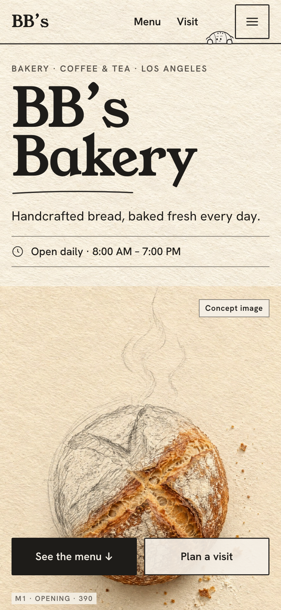
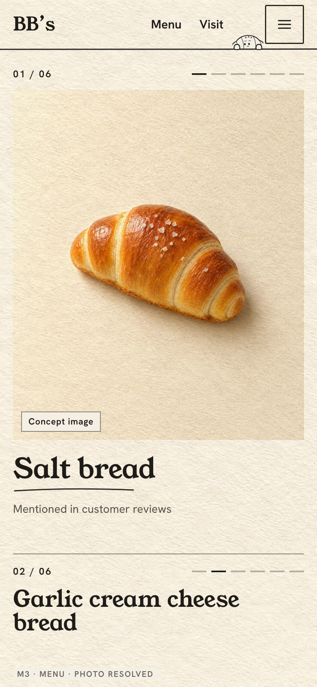
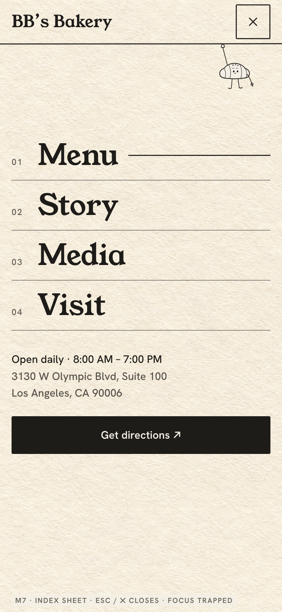
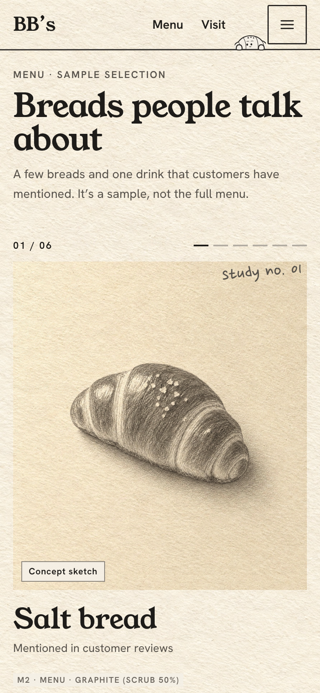

Facts in the first ~370 px. Both actions within thumb reach.

One bread at a time, no pin. Scrub from 85% to 35% of the viewport.

Index sheet: 48 px+ targets, hours and directions included.
 Concept image
Concept image Concept sketch
Concept sketch Concept image
Concept imageMobile hero crop keeps the loaf fully inside the frame · sketch-to-photo layers capped at 900 px · AVIF/WebP · lazy below the fold.
The peek

The roll looks over the header rule in its own 38 px slot. It never sits inside the toggle or over content. It glances at the last tap for 900 ms.
Targets
44 px minimum, 48 for the toggle and sheet links, 8 px between neighbors. Nothing depends on hover or swipe.
Motion budget
No Lenis, no pins, no pointer tracking. The character has two moving parts (eyes, a 3 px bob). One scrubbed transition per menu item. Everything else plays once.
Reduced motion
Final photos shown immediately with a small "Pencil study" thumbnail beside each. Static peek. The route and margin line are pre-drawn.
Type at 390
Aa H1 75 · H2 36–40 · H3 30 · body 16/1.6 · labels 13 · notes 22